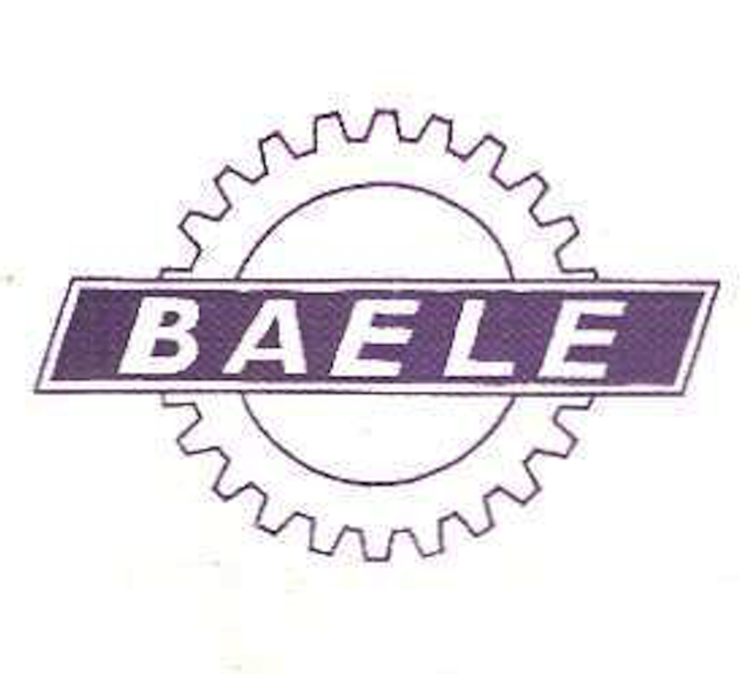
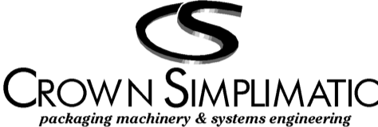
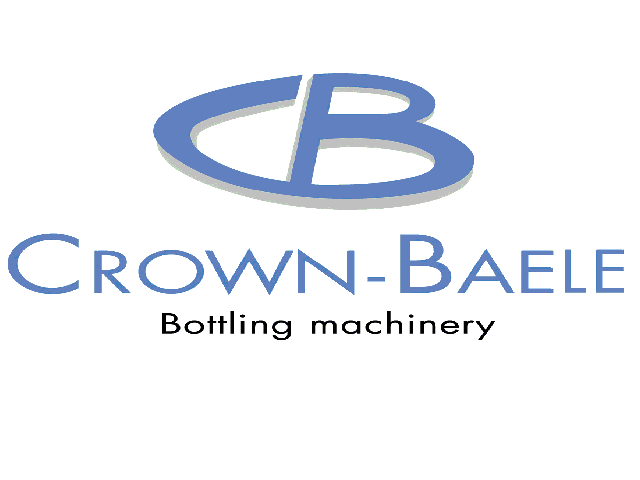

The origins of the crown
NEW CROWN Service Partners NV was founded in October 2017 by two former employees and acquired the intellectual property and trade fund of CROWN-BAELE, who was declared bankrupt a month before. This makes NEW CROWN the sole official OEM of CROWN-BAELE parts and assemblies.
The name NEW CROWN was chosen to mark the inseparable connection with the history of its illustrious predecessor yet indicating a new business model and ambition in becoming the reference for upgrading older equipment in the global RGB industry.


